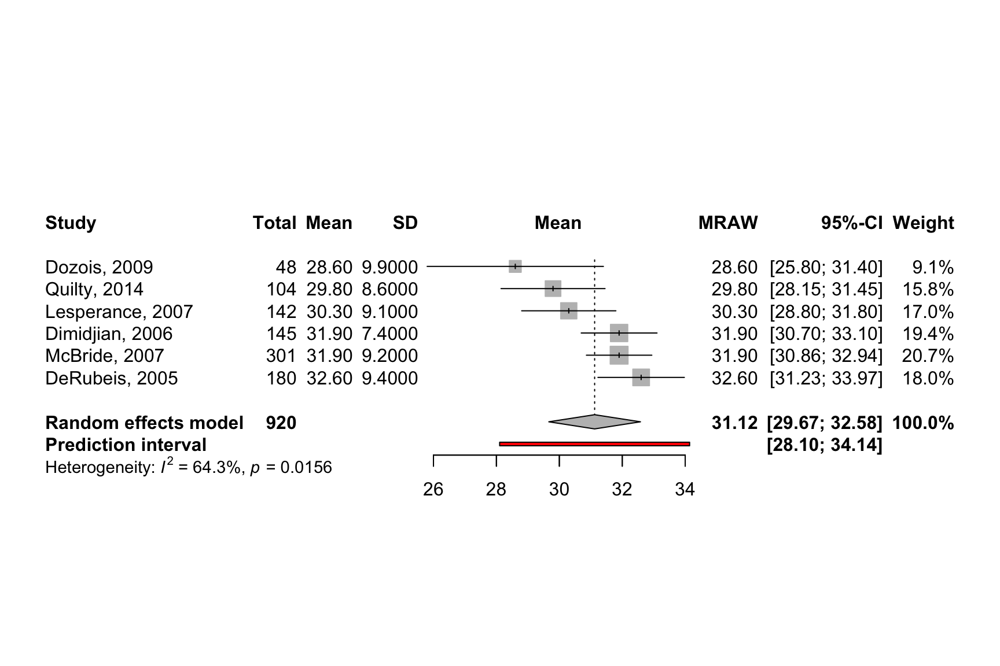
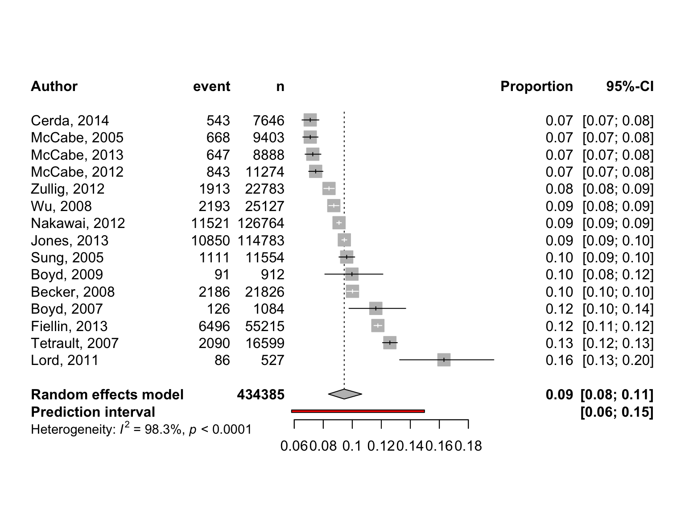

pacman::p_load(tidyverse, magrittr, conflicted,
meta)
conflict_prefer("select", "dplyr")
conflict_prefer("filter", "dplyr")
conflict_prefer("mutate", "dplyr")
cbbPalette <- c("#000000", "#E69F00", "#56B4E9", "#009E73",
"#F0E442", "#0072B2", "#D55E00", "#CC79A7")55 Metaanalysen
Letzte Änderung am 28. September 2023 um 14:04:26
Stand des Kapitels im September 2023

Das Thema Metaanalysen ist erstmal auf Stand-By gesetzt, bis mir klar ist, wohin ich mit dem Kapitel zum Ende hin will. Die Daten sind da und der Code funktioniert auch. Zur Interpretation bitte dann die verlinkten Tutorien besuchen.
“The only way to test a hypothesis is to look for all the information that disagrees with it.” — Karl Popper
Disclaimer - Wichtig! Lesen!
Der folgende Text ist ein Lehrtext für Studierende. Es handelt sich keinesfalls um eine textliche Beratung für Metaanalysen in einem wissenschaftlichen oder medizinischen Reviewprozess. Alle Beispiel sind im Zweifel an den Haaren herbeigezogen und dienen nur der Veranschaulichung möglicher Sachverhalte.
In diesem Kapitel wollen wir uns einmal die Metaanalyse oder indirekte Vergleiche anschauen. Wir halten das Kapitel bewusst kurz, denn wenn wir das Thema ausführlich behandeln wollten, dann wäre es ein eigenes Buch. Das wollen wir aber nicht, es reicht, wenn wir hier die Grundlagen verstehen. Das heißt vor allem, dass wir die Daten so erstellt kriegen, dass wir selber eine Marktanalyse rechnen können. Der Fokus ist hier auf den Agrarwissenschaften, aber die Beispiele wurden von mir aus dem “Doing Meta-Analysis with R: A Hands-On Guide” von Harrer u. a. (2021) adaptiert und in einen neuen Kontext gesetzt. Wenn du wirklich eine Metaanalyse rechnen willst, dann musst du nochmal durch das Buch von Harrer u. a. (2021) oder den Artikel von Balduzzi u. a. (2019) durcharbeiten.
Also gut, was macht also eine Metananalyse oder warum heißt es den indirekter Vergleich? Wenn wir normalerweise ein Experiment durchführen, dann messen wir verschiedene Outcomes und Einflussvariablen, rechnen ein Modell oder einen einfacheren statistischen Test und berichten die Effektschätzer und den \(p\)-Wert in einer wissenschaftlichen Veröffentlichung. Hier setzt die Metaanalyse dann an. Wir kombinieren nämlich die Ergebnisse und damit die Effektschätzer verschiedener Studien in einer riesigen Studie. Und diese riesige Studie nennen wir dann Metaanalyse. Wir kombinieren hierbei nur die Effektschätzer aus den verschiedenen Studien. Der algorithmische Prozess ist nicht so simple, basiert aber auf der wichtigen Annahme, dass die Studien alle in etwa homogen sind. Der Begriff ist hier sehr weit gefasst. Alle Studien müssen natürlich das gleiche Outcome haben, die gleichen Menschen, Tiere oder Pflanzen beobachten sowie das statistische Modell muss das Gleiche sein. Du siehst schnell, bevor du eine Metaanalyse rechnen kannst, geht sehr viel Zeit in die Suche nach passenden wissenschaftlichen Veröffentlichungen. Daher ist jeder Metaanalyse eigentlich eine systematische Literaturrecherche (eng. systematic review) vorgeschaltet. Wenn du mehr darüber lesen möchtest, dann kann dir Tawfik u. a. (2019) einen Einstieg liefern.

Das ist hier natürlich eine Metanalyse für Arme. Wie man es richtig umfangreich macht, findest du in einem sehr gutem und umfangreichen Tutorial zu Doing Meta-Analysis in R: A Hands-on Guide
Noch als kleine Randbemerkung, wenn du aus den medizinischen Bereich kommst, dann solltest du die Leitlinien in den Allgemeinen Methoden des Institut für Qualität und Wirtschaftlichkeit im Gesundheitswesen (IQWiG) zu den Metaanalysen oder indirketen Vergleichen kennen. Wir können hier leider nicht in die Tiefe der Leitlinien abtauchen.
55.1 Genutzte R Pakete
Wir wollen folgende R Pakete in diesem Kapitel nutzen.
Am Ende des Kapitels findest du nochmal den gesamten R Code in einem Rutsch zum selber durchführen oder aber kopieren.
55.2 Daten
Woher kommen eigentlich die Daten einer Metaanalyse? Wir können Google Scholar nutzen um zu einem Thema systematisch wissenschaftliche Veröffentlichungen zu suchen. Der Fokus liegt hier auf systematisch und beschreibt einen strukturierten Reviewprozess. In diesem Kapitel nutzen wir die Daten von Harrer u. a. (2021) modifiziert auf ein agrarwissenschaftliches Beispiel. Wie immer liefert die originale Quelle noch mehr Informationen, wir kürzen hier einmal ab, damit wir die Kerngedanken verstehen.
Beginnen wir mit einer Datensatz in dem wir uns den Effekt von mittleren Erträgen in Weizen unter der Gabe von Eisen anschauen. Wir haben uns hier für eine Eisendosis mit \(10\mu mol\) entschieden, die in allen Studien vorgekommen ist. Dann haben wir noch geschaut wie viele Pflanzen in der Gruppe untersucht wurden und wie die mitteleren Effekte plus die Standardabweichung waren.
drymatter_tbl <- read_excel("data/meta/drymatter_iron_studies.xlsx") Schauen wir uns nochmal die Daten genauer an. Hier ist es besonders wichtig zu beachten, dass wir uns einen Wert aus einem ganzen Experiment anschauen und verschiedene Werte aus verschiedenen Experimenten dann miteinander in Verbindung setzen wollen.
| author | n | mean | sd |
|---|---|---|---|
| DeRubeis, 2005 | 180 | 32.6 | 9.4 |
| Dimidjian, 2006 | 145 | 31.9 | 7.4 |
| Dozois, 2009 | 48 | 28.6 | 9.9 |
| Lesperance, 2007 | 142 | 30.3 | 9.1 |
| McBride, 2007 | 301 | 31.9 | 9.2 |
| Quilty, 2014 | 104 | 29.8 | 8.6 |
Ein weiterer Effekt den wir uns anschauen können ist der Vergleich von Anteilen. In diesem Fall haben wir Ereignisse (eng. event) gezählt und wissen aber auch die Gesamtzahl an möglichen Ereignissen. Konkret haben wir die Anzahl an infizierten Sonnenblumensamen mit Mehltau nach der Behandlung mit MoldEx betrachtet. Dabei haben wir richtig viele Pflanzen (\(n\)) angeschaut und gezählt wie viele Samen dann mit Mehltau infiziert waren (event).
sunflower_tbl <- read_excel("data/meta/infected_sunflower_studies.xlsx") Auch hier haben wir einmal in die ganzen Studien zu dem Wirkstoff MoldEx geschaut und jeweils rausgeschrieben, wie viele Sonnenblumensamen (\(n\)) betrachtet wurden und wie viele von den Sonnenblumen dann infiziert waren (event).
| author | event | n |
|---|---|---|
| Becker, 2008 | 2186 | 21826 |
| Boyd, 2009 | 91 | 912 |
| Boyd, 2007 | 126 | 1084 |
| Cerda, 2014 | 543 | 7646 |
| Fiellin, 2013 | 6496 | 55215 |
| Jones, 2013 | 10850 | 114783 |
| Lord, 2011 | 86 | 527 |
| McCabe, 2005 | 668 | 9403 |
| McCabe, 2012 | 843 | 11274 |
| McCabe, 2013 | 647 | 8888 |
| Nakawai, 2012 | 11521 | 126764 |
| Sung, 2005 | 1111 | 11554 |
| Tetrault, 2007 | 2090 | 16599 |
| Wu, 2008 | 2193 | 25127 |
| Zullig, 2012 | 1913 | 22783 |
Häufig kann es vorkommen, dass wir weder die Mittelwerte und die Standardabweichung vorliegen haben oder aber die Anteile. Meist haben wir dann Glück, dass wir Effektschätzer wie das Odds ratio (\(OR\)), Risk ratio (\(RR\)) für die Anteile vorliegen haben. Oder aber wir finden Cohen’s \(d\) oder Hedge’s \(g\) für den Effekt der standardisierten Mittelwertsunterschiede.
In unserem Fall haben wir jetzt Euterkrebsdaten von Kühen und die entsprechenden Hedge’s \(g\) Werte für die Differenz der Kontrolle zur Chemotherapie. Auch hier haben alle Kühe die gleiche Chemotherapie erhalten und wir sind nur an dem Effekt zu der Kontrolle interessiert. Es gibt also nur einen paarweisen Gruppenvergleich.
cow_tbl <- read_excel("data/meta/cow_cancer_studies.xlsx") Schauen wir uns nochmal einen Ausschnitt der Daten in der zu dem Euterkrebs von Kühen an.
| Author | TE | seTE |
|---|---|---|
| Call et al. | 0.71 | 0.26 |
| Cavanagh et al. | 0.35 | 0.20 |
| DanitzOrsillo | 1.79 | 0.35 |
| de Vibe et al. | 0.18 | 0.12 |
| Frazier et al. | 0.42 | 0.14 |
| Frogeli et al. | 0.63 | 0.20 |
| Gallego et al. | 0.72 | 0.22 |
| Hazlett-Stevens & Oren | 0.53 | 0.21 |
| Hintz et al. | 0.28 | 0.17 |
| Kang et al. | 1.28 | 0.34 |
| Kuhlmann et al. | 0.10 | 0.19 |
| Lever Taylor et al. | 0.39 | 0.23 |
| Phang et al. | 0.54 | 0.24 |
| Rasanen et al. | 0.43 | 0.26 |
| Ratanasiripong | 0.52 | 0.35 |
| Shapiro et al. | 1.48 | 0.32 |
| Song & Lindquist | 0.61 | 0.23 |
| Warnecke et al. | 0.60 | 0.25 |
Wir haben jetzt also insgesamt drei Datensätze. Einmal einen Datensatz zu Weizenerträgen mit dem Effekt der Mittelwerte, einen Datensatz der Infektionen von Sonnenblumen mit Anteilen sowie einem Datensatz mit Euterkrebs mit vorausberechneten Effektmaß Hedge’s \(g\).
55.3 Das Modell mit fixen Effekten
Die Idee hinter dem Modell mit fixen Effekten (eng. fixed effect) ist, dass die beobachteten Effektgrößen von Studie zu Studie variieren können, was aber nur auf den Stichprobenfehler zurückzuführen ist. In Wirklichkeit sind die wahren Effektgrößen alle gleich: die Effekte sind fix. Aus diesem Grund wird das Modell mit festen Effekten manchmal auch als Modell mit “gleichen Effekten” oder “gemeinsamen Effekten” bezeichnet.
Das Modell der festen Effekte geht davon aus, dass alle unsere Studien Teil einer homogenen Population sind und dass die einzige Ursache für Unterschiede in den beobachteten Effekten der Stichprobenfehler der Studien ist. Wenn wir die Effektgröße jeder Studie ohne Stichprobenfehler berechnen würden, wären alle wahren Effektgrößen absolut gleich.
55.4 Das Modell mit zufälligen Effekten
Das Modell der zufälligen Effekte (eng. random effect) geht davon aus, dass es nicht nur eine wahre Effektgröße gibt, sondern eine Verteilung der wahren Effektgrößen. Das Ziel des Modells mit zufälligen Effekten ist es daher nicht, die eine wahre Effektgröße aller Studien zu schätzen, sondern den Mittelwert der Verteilung der wahren Effekte.
In der Praxis ist es sehr ungewöhnlich, eine Auswahl von Studien zu finden, die vollkommen homogen ist. Dies gilt selbst dann, wenn wir uns an bewährte Verfahren halten und versuchen, den Umfang unserer Analyse so präzise wie möglich zu gestalten.
In vielen Bereichen, einschließlich der Medizin und der Sozialwissenschaften, ist es daher üblich, immer ein Modell mit zufälligen Effekten zu verwenden, da ein gewisses Maß an Heterogenität zwischen den Studien praktisch immer zu erwarten ist. Ein Modell mit festen Effekten kann nur dann verwendet werden, wenn keine Heterogenität zwischen den Studien festgestellt werden konnte und wenn wir sehr gute Gründe für die Annahme haben, dass der wahre Effekt fest ist. Dies kann zum Beispiel der Fall sein, wenn nur exakte Replikationen einer Studie betrachtet werden oder wenn wir Teilmengen einer großen Studie meta-analysieren. Natürlich ist dies nur selten der Fall, und Anwendungen des Modells mit festem Effekt “in freier Wildbahn” sind eher selten.
55.5 Indirekte Vergleiche in R
m.mean <- metamean(n = n,
mean = mean,
sd = sd,
studlab = author,
data = drymatter_tbl,
sm = "MRAW",
fixed = FALSE,
random = TRUE,
method.tau = "REML",
hakn = TRUE,
title = "Ertrag von Weizen nach Eisenbehandlung")
summary(m.mean)Review: Ertrag von Weizen nach Eisenbehandlung
mean 95%-CI %W(random)
DeRubeis, 2005 32.6000 [31.2268; 33.9732] 18.0
Dimidjian, 2006 31.9000 [30.6955; 33.1045] 19.4
Dozois, 2009 28.6000 [25.7993; 31.4007] 9.1
Lesperance, 2007 30.3000 [28.8033; 31.7967] 17.0
McBride, 2007 31.9000 [30.8607; 32.9393] 20.7
Quilty, 2014 29.8000 [28.1472; 31.4528] 15.8
Number of studies combined: k = 6
Number of observations: o = 920
mean 95%-CI
Random effects model 31.1221 [29.6656; 32.5786]
Quantifying heterogeneity:
tau^2 = 1.0937 [0.0603; 12.9913]; tau = 1.0458 [0.2456; 3.6043]
I^2 = 64.3% [13.8%; 85.2%]; H = 1.67 [1.08; 2.60]
Test of heterogeneity:
Q d.f. p-value
14.00 5 0.0156
Details on meta-analytical method:
- Inverse variance method
- Restricted maximum-likelihood estimator for tau^2
- Q-Profile method for confidence interval of tau^2 and tau
- Hartung-Knapp (HK) adjustment for random effects model (df = 5)
- Untransformed (raw) meansm.prop <- metaprop(event = event,
n = n,
studlab = author,
data = sunflower_tbl,
method = "GLMM",
sm = "PLOGIT",
fixed = FALSE,
random = TRUE,
hakn = TRUE,
title = "Befall von Sonnenblumen mit Mehltau")
summary(m.prop)Review: Befall von Sonnenblumen mit Mehltau
proportion 95%-CI
Becker, 2008 0.1002 [0.0962; 0.1042]
Boyd, 2009 0.0998 [0.0811; 0.1211]
Boyd, 2007 0.1162 [0.0978; 0.1368]
Cerda, 2014 0.0710 [0.0654; 0.0770]
Fiellin, 2013 0.1176 [0.1150; 0.1204]
Jones, 2013 0.0945 [0.0928; 0.0962]
Lord, 2011 0.1632 [0.1327; 0.1976]
McCabe, 2005 0.0710 [0.0659; 0.0764]
McCabe, 2012 0.0748 [0.0700; 0.0798]
McCabe, 2013 0.0728 [0.0675; 0.0784]
Nakawai, 2012 0.0909 [0.0893; 0.0925]
Sung, 2005 0.0962 [0.0908; 0.1017]
Tetrault, 2007 0.1259 [0.1209; 0.1311]
Wu, 2008 0.0873 [0.0838; 0.0908]
Zullig, 2012 0.0840 [0.0804; 0.0876]
Number of studies combined: k = 15
Number of observations: o = 434385
Number of events: e = 41364
proportion 95%-CI
Random effects model 0.0944 [0.0836; 0.1066]
Quantifying heterogeneity:
tau^2 = 0.0558; tau = 0.2362; I^2 = 98.3% [97.9%; 98.7%]; H = 7.74 [6.92; 8.66]
Test of heterogeneity:
Q d.f. p-value Test
838.21 14 < 0.0001 Wald-type
826.87 14 < 0.0001 Likelihood-Ratio
Details on meta-analytical method:
- Random intercept logistic regression model
- Maximum-likelihood estimator for tau^2
- Random effects confidence interval based on t-distribution (df = 14)
- Logit transformation
- Clopper-Pearson confidence interval for individual studiesm.gen <- metagen(TE = TE,
seTE = seTE,
studlab = Author,
data = cow_tbl,
sm = "SMD",
fixed = FALSE,
random = TRUE,
method.tau = "REML",
hakn = TRUE,
title = "Third Wave Psychotherapies")
summary(m.gen)Review: Third Wave Psychotherapies
SMD 95%-CI %W(random)
Call et al. 0.7091 [ 0.1979; 1.2203] 5.0
Cavanagh et al. 0.3549 [-0.0300; 0.7397] 6.3
DanitzOrsillo 1.7912 [ 1.1139; 2.4685] 3.8
de Vibe et al. 0.1825 [-0.0484; 0.4133] 7.9
Frazier et al. 0.4219 [ 0.1380; 0.7057] 7.3
Frogeli et al. 0.6300 [ 0.2458; 1.0142] 6.3
Gallego et al. 0.7249 [ 0.2846; 1.1652] 5.7
Hazlett-Stevens & Oren 0.5287 [ 0.1162; 0.9412] 6.0
Hintz et al. 0.2840 [-0.0453; 0.6133] 6.9
Kang et al. 1.2751 [ 0.6142; 1.9360] 3.9
Kuhlmann et al. 0.1036 [-0.2781; 0.4853] 6.3
Lever Taylor et al. 0.3884 [-0.0639; 0.8407] 5.6
Phang et al. 0.5407 [ 0.0619; 1.0196] 5.3
Rasanen et al. 0.4262 [-0.0794; 0.9317] 5.1
Ratanasiripong 0.5154 [-0.1731; 1.2039] 3.7
Shapiro et al. 1.4797 [ 0.8618; 2.0977] 4.2
Song & Lindquist 0.6126 [ 0.1683; 1.0569] 5.7
Warnecke et al. 0.6000 [ 0.1120; 1.0880] 5.2
Number of studies combined: k = 18
SMD 95%-CI t p-value
Random effects model (HK) 0.5771 [0.3782; 0.7760] 6.12 < 0.0001
Quantifying heterogeneity:
tau^2 = 0.0820 [0.0295; 0.3533]; tau = 0.2863 [0.1717; 0.5944]
I^2 = 62.6% [37.9%; 77.5%]; H = 1.64 [1.27; 2.11]
Test of heterogeneity:
Q d.f. p-value
45.50 17 0.0002
Details on meta-analytical method:
- Inverse variance method
- Restricted maximum-likelihood estimator for tau^2
- Q-Profile method for confidence interval of tau^2 and tau
- Hartung-Knapp (HK) adjustment for random effects model (df = 17)55.6 Forest Plots
forest.meta(m.mean,
sortvar = TE,
prediction = TRUE,
print.tau2 = FALSE)
forest.meta(m.prop,
sortvar = TE,
prediction = TRUE,
print.tau2 = FALSE,
leftlabs = c("Author", "event", "n"))
forest.meta(m.gen,
sortvar = TE,
prediction = TRUE,
print.tau2 = FALSE,
leftlabs = c("Author", "g", "SE"))55.7 Publication Bias
funnel.meta(m.prop,
xlim = c(-3, -1.5),
studlab = TRUE)
funnel.meta(m.mean,
xlim = c(27, 35),
studlab = TRUE)
funnel.meta(m.gen,
xlim = c(-0.5, 2),
studlab = TRUE)Referenzen
Balduzzi S, Rücker G, Schwarzer G. 2019. How to perform a meta-analysis with R: a practical tutorial. BMJ Ment Health 22: 153–160.
Harrer M, Cuijpers P, A FT, Ebert DD. 2021. Doing Meta-Analysis With R: A Hands-On Guide. 1st Aufl. Chapman & Hall/CRC Press.
Tawfik GM, Dila KAS, Mohamed MYF, Tam DNH, Kien ND, Ahmed AM, Huy NT. 2019. A step by step guide for conducting a systematic review and meta-analysis with simulation data. Tropical medicine and health 47: 1–9.